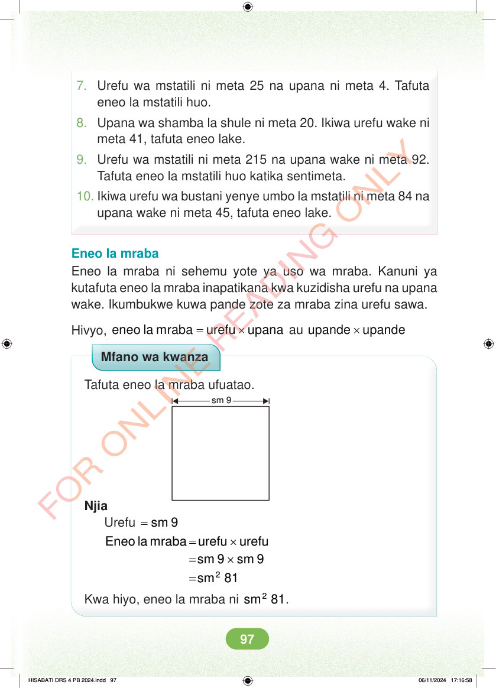

7. Urefu wa mstatili ni meta 25 na upana ni meta 4. Tafuta eneo la mstatili huo. 8. Upana wa shamba la shule ni meta 20. Ikiwa urefu wake ni meta 41, tafuta eneo lake. 9. Urefu wa mstatili ni meta 215 na upana wake ni meta 92. Tafuta eneo la mstatili huo katika sentimeta. 10. Ikiwa urefu wa bustani yenye umbo la mstatili ni meta 84 na upana wake ni meta 45, tafuta eneo lake. Eneo la mraba Eneo la mraba ni sehemu yote ya uso wa mraba. Kanuni ya kutafuta eneo la mraba inapatikana kwa kuzidisha urefu na upana wake. Ikumbukwe kuwa pande zote za mraba zina urefu sawa. Hivyo, = × eneo la mraba urefu upana au × upande upande Mfano wa kwanza Tafuta eneo la mraba ufuatao. sm 9 Njia Urefu = sm 9 = × Eneo la mraba urefu urefu = × = 2 sm 9 sm 9 sm 81 2 sm 81. Kwa hiyo, eneo la mraba ni HISABATI DRS 4 PB 2024.indd 97 HISABATI DRS 4 PB 2024.indd 97 06/11/2024 17:16:58 06/11/2024 17:16:58